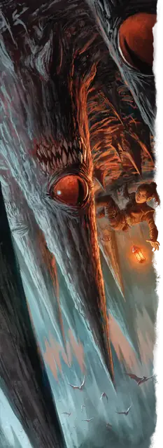

Пронзатель
Piercer
Средняя Аберрация, без мировоззрения

Класс Защиты 15 Инициатива +3 (13)
Хиты 22 (3к8 + 9)
Скорость 5 футов, Лазания 15 футов
| мод | спас | ||
|---|---|---|---|
| СИЛ | 13 | +1 | +1 |
| ЛОВ | 13 | +1 | +1 |
| ТЕЛ | 16 | +3 | +3 |
| мод | спас | ||
|---|---|---|---|
| ИНТ | 1 | −5 | −5 |
| МДР | 7 | −2 | −2 |
| ХАР | 3 | −4 | −4 |
Чувства Тёмное зрение 60 футов, пассивное Восприятие 8, Слепое зрение 30 футов
Языки нет
Опасность 1/2 (100 опыта; БВ +2)
Особенности
Паучье лазание. Пронзатель может лазать по сложным поверхностям, включая потолки, без совершения проверок характеристик.
Действия
Укус. Бросок рукопашной атаки: +3, досягаемость 5 фт. Попадание: 5 (1к8 + 1) Колющего урона.
Падение. Пронзатель падает. Спасбросок Ловкости: Сл 11, одно существо непосредственно под пронзателем. Провал: 10 (3к6) Колющего урона. Провал или успех: Пронзатель уменьшает любой полученный им урон от падения на 20.
Бонус мастерства +2
Среда обитания Подземье
Сокровища Личные